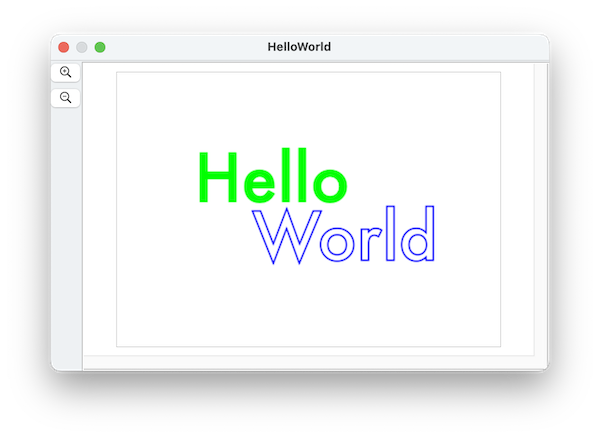

Text shapes draw text. They have the same color, position, fill color, color and line width properties as other shapes
Like polygons, they have a rotation.
Unique to text shapes are the contents, the font, and font size properties.
run the following script to make a "Hello World" document

tell application "SinterPixels"
set d to make new document with properties {height:300, width:420}
tell d
make new text shape with properties {position:{-40, 32}, font:"Futura", contents:"Hello", font size:72, fill color:green, line width:0}
make new text shape with properties {position:{40, -32}, font:"Futura", contents:"World", font size:72, fill color:clear, line width:2, color:blue}
repeat with n from 1 to 360
set rotation of every text shape to n
end repeat
end tell
end tell